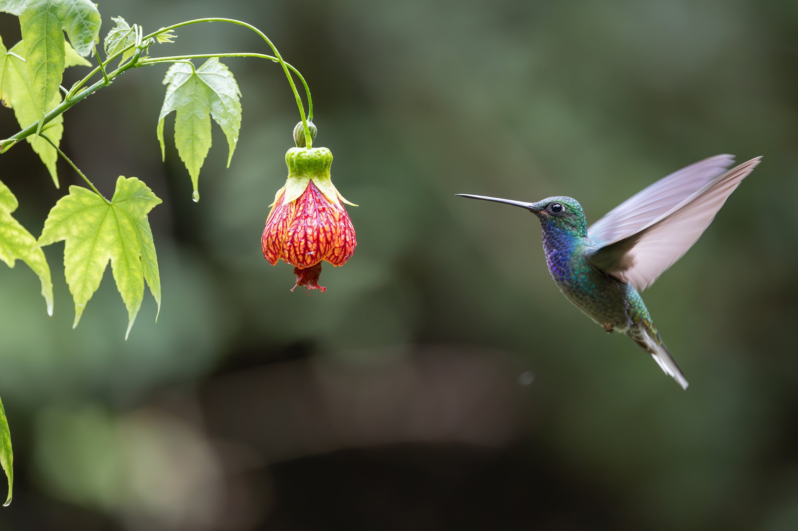
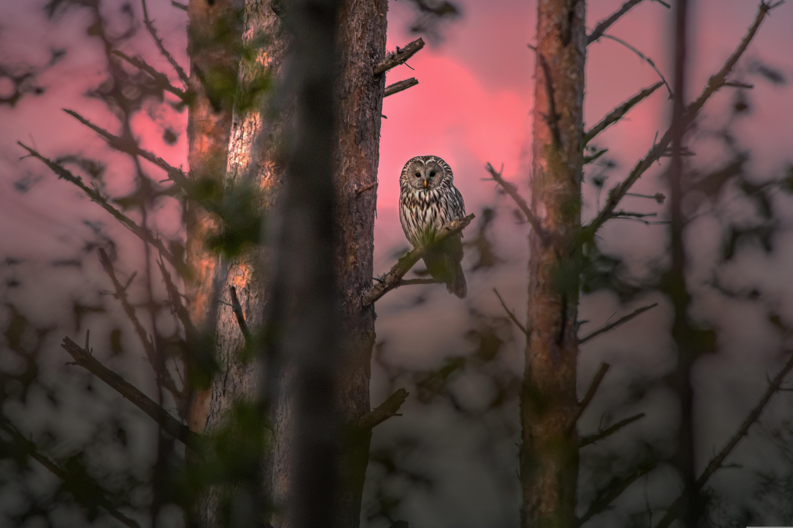

Projects

Mallard Mash
A retro-style web strategy game built in python, where players compete to beat a variety of AI duck opponents. Note: I hate Bartholemew.
Explore →
Optical Rotation in Sucrose
An incredibly dull lab report on the accuracy of undergraduate measurements of the optical rotation of light in sucrose solutions.
Explore →Mars Colonisation
A scientific essay on the realities of Mars Colonisation, serving as a response to Muskian futurist propoganda.
Explore →
Political Compass Quiz
An interactive quiz built in python to assess your own views' aligment with the famous political compass, steeped in political in-jokes and references.
Explore →